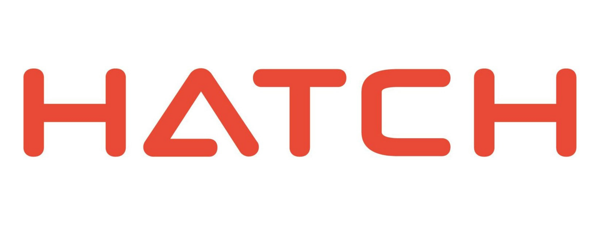
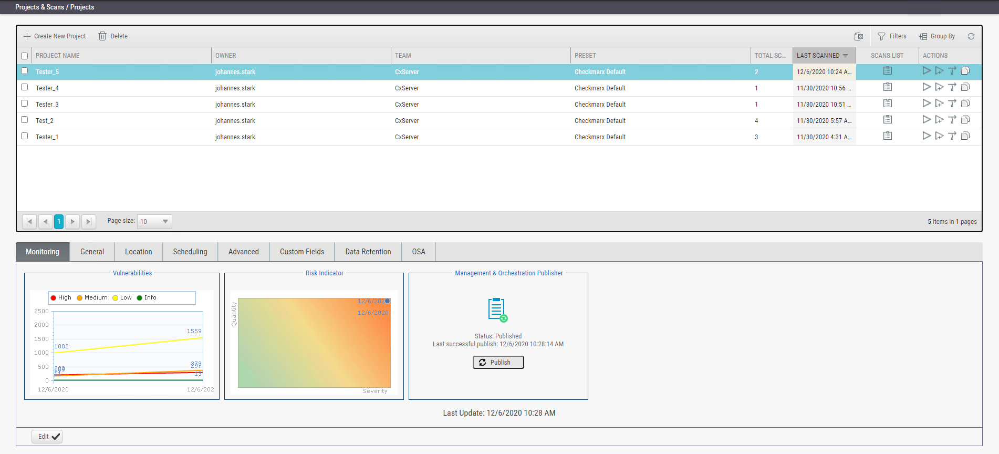
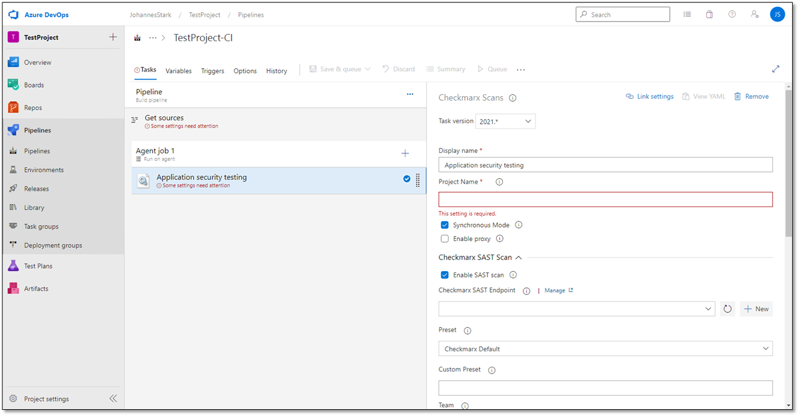

Hatch Work Term Report W-21
Introduction
The purpose of this website is to document my experience at all of my co-op work-term placements during my time at the University of Guelph. Currently as of January 2021, I have completed my first co-op work term at an engineering consultancy company called Hatch as a junior software developer. I am now going into my third semester as a computer science student and plan to update this website after every new work-term. Once I finish my next coop-term I will make a home page and link this work-term report to it. To navigate my report you can use the nav bar on the left to scroll to the appropriate section.
About Hatch
Hatch is an engineering and consultancy company that specializes in the energy, mining, infrastructure, digital and investment sectors. It consists of approximately 9000 employees in 70+ offices and works on projects around the world in over 150 countries. Employees at hatch are known as “entrepreneurs with a technical soul” and combine their extensive business and engineering knowledge to serve the client.
About My Job
At Hatch I was employed as a junior developer in the Digital Solutions sector. In essence my job was to update and modify numerous web applications used by Hatch. This job was highly relevant to my program since it allowed me to apply my programming skills to a booming field in the real word web development.
During the first couple weeks of my work-term I was tasked with implementing a static code analysis security program called Checkmarx into all of Azure Devops QA pipelines. This required me to study Checkmarx documentation and preform a great deal of problem solving to reduce the amount of time the code analysis took to run for each pipeline. Below is an image of the Checkmarx interface from the Checkmarx website:
Below is a sample image of an Azure Devops pipeline. This is where I adjusted the settings to get the QA pipeline linked to Checkmarx:
The following two months another co-op student and I were assigned to revamp a website called the Estimate Governance register which was used by Hatch as a tool for estimating projects. The app consisted of a home page, a user friendly form page to add projects to the app and a results page with a table to list all of the project data such as the project's lead estimator, cost and location. The main technologies that we used to upgrade the app were Angular, Typescript and CSS for the front-end and the .Net framework and C# for the backend. Moreover we worked on upgrading the app’s authentication from ADAL to MSAL and implementing NGRX to add state management to the application. Finally, we improved the table in the results page that displayed all of the project data by implementing AG-Grid (a customizable data grid) to the results page of the application. This improved the readability of the data and allowed for more features for sorting and organizing data. We also added AG-Grid to the home page with a subset of the most relevant data for easier access to important data.
During the final month I worked with the same co-op student to upgrade the UI on another app called DataMart and fix various small bugs. This mostly required using the frontend technologies that I mentioned previously. At the very end of the work term I worked on writing the documentation for all of the apps that I worked on. Below is an image of the documentation for how Estimating Governance register works and the technologies it uses.
Goals and Learning Outcomes
During the work term I came up with 3 learning goals that I believed would make me a better software developer in the future and would help enhance my abilities in areas that I was missing from University. The 3 goals were to:
- Learn the Angular Framework and related tools relevant to the job (C#, .Net Framework, Azure Devops, etc).
- Improve my teamwork skills as a software developer.
- Refine my presentation and oral communication skills.
Goal #1
During my co-op work-term I wanted to improve my ability at learning new technologies since software developers must be able to adapt depending on the project they are working on. I specifically wanted to become proficient with the Angular framework since I have never used it before and it is one of the most popular front-end frameworks for creating websites.
To achieve my goal of learning a new framework I studied the angular documentation, read a number of blogs on angular concepts online and got my more experienced teammate to look over my code and offer improvements. Moreover, to put my learning into practice I decided to create my very own angular application using all of the concepts and technologies that I learned at my workplace.
At the end of my work term the app I decided to create is a Gacha game simulator where you use currency to obtain randomized characters. The app consists of a landing page, the simulator page where you obtain characters and an inventory page where you can view the characters you collected. This app improved my front-end skills in angular and I learned how to incorporate a database into my application to store the characters and user login information. Below is a gif of the character summon feature of my gacha game. I have yet to finish the backend of the application so I will link the final application when I am finished.
Goal #2
Another area I wanted to improve on during my work term was my teamwork skills as a software developer since the majority of real world applications are developed by large teams of developers. Unfortunately, at university most of my courses were entirely focused on individual tests and assignments. As a result, before my work-term I had very little experience working with others in a software environment.
To achieve my goal of improving my teamwork skills I met with my teammate everyday where we set goals and discussed how we would complete our assigned stories in a timely manner. Additionally we would communicate with each other when we needed help, and when something was out of our grasp we would set up a meeting with someone else in the company or with our supervisor to efficiently solve the problem at hand. Moreover, we did a good job of splitting up the work amongst ourselves. As a result of good communication, knowing when to ask for help and effectively separating our work we were able to complete all of our stories and projects in a timely manner.
By the end of the work-term I became a better team player and as the semester progressed my teammate and I were able to tackle more challenging stories and were able to complete our stories much quicker than at the beginning of the work term as we became better at working together.
Goal #3
The final goal that I set was to brush up on my presentation skills by the end of the co-op work term since at school I had limited experience sharing my work and ideas in front of my peers. Specifically when I presented I wanted to be more confident, explain myself more clearly and be more concise with my explanations. This would help me be better in future jobs at clearly communicating my work and ideas to teammates and clients so they could understand and learn from my presentations and discussions.
To achieve my goal of improving my presentation skills I developed good presentation habits by taking notes before meetings to organize my thoughts so that I could express myself more clearly and concisely. Moreover I practiced presenting the tasks I completed, what I was going to work on next and the problems I was facing everyday in front of my teammate at each standup.
I put my practice into action for a presentation to the client about all of the features my teammate and I implemented for our first application called the Estimate Governance Register after we finished it. I created a small slide-show with bullet points for the changes we implemented to the application and took notes to expand on all of the points that I made as well as how to demo the changes in front of the client. When I presented I was able to clearly express all of the changes we made to the application along with the demos that I performed to illustrate each change and the client was happy with my presentation and our work.
Challenges and Takeaways
Preface
For the focus of my blog the topic I am going to write about is how it was like for me to settle into my very first coop job, the challenges I faced, what I learned from those challenges, and the skills they helped me develop by the end of the term.
The Learning Curve
As this was my first coop work-term I faced many challenges. First off, at the start of the work-term I had very little web development experience in general. I was only familiar with the basics of web development and was an amateur at Javascript, CSS, HTML and databases. My job required my to use Angular, .Net with C# and Azure Devops which were all completely new technologies to me. Luckily I had some experience using React before and had done some backend development using the Express framework in Node so I was familiar with a lot of the basic concepts. I had two weeks to ease in to my role while working on Checkmarx. I did some self learning in my free time before I started actually working on any Angular applications. During this time I diligently studied the basics of Angular by reading the documentation, watching youtube videos, reading blog posts and working on small projects. When it was time for me to finally start working on my first Angular application for the company I was eased into it by receiving easier stories in the beginning. However, it still took me quite a long time to complete my first few stories due to my lack of experience with Angular and due to how massive the code base was.
Working on a Large Scale Project
The codebase for all of the applications at Hatch was massive and chaotic. There were a ton of directories everywhere and it was challenging to even locate the application I was looking for. The naming conventions for applications were inconsistent, the directories were unorganized and there was a ton of directories. Even when I found the app I was searching for it would then take a great deal of effort to get it running correctly since a lot of apps were missing proper documentation. Moreover, there were plenty of times where the last employees who worked on the application no longer worked at Hatch so I had to investigate and troubleshoot get the app running. Even after figuring out how to run the app the next obstacle was being able to comprehend the codebase for the app. This was probably the biggest challenge I encountered throughout my coop term at Hatch. Previously, I had never worked on any projects with such a large codebase and on top of that I hardly had any experience reading and working with other peoples code. This made it challenging for me to complete even simple tasks such as adding an additional text field to a form since I would have to locate everywhere in the codebase where the data was going to be used. However, this became easier with time as I became more familiar with where everything was in the codebase. Another issue I faced was that I only new the basics of Angular so comprehending code written by more experienced developers was very difficult for me to understand and sometimes I would just have to focus on understanding the general idea of what the code was was accomplishing to complete my stories on time. Furthermore, due to my lack of knowledge I had to constantly research specific aspects of Angular to complete my stories.
Takeaways
Some lessons that I learned from the challenges I faced at Hatch is to always:
- Provide good documentation for projects so that future employees can add new features/updates painlessly and efficiently.
- Add comments to complicated, large and unintuitive sections of code to make it more comprehensible for other people to read.
- Constantly refactor code to increase it's readability, organization and length so that it is easier to find what you are looking for and make future changes.
Skills I Developed
By the end of my work-term I improved on a variety of skills.
First off I became much better at problem solving over the work-term. Throughout my job I constantly had to search up concepts and documentation to complete my stories and as the work-term progressed I got better at finding the right resources to solve my problems. Moreover, during my coop I became much more efficient at dubugging errors in my code by becoming more familiar with the developer tools. Before my coop term I used to mainly used print statements to debug my code. However later on in my coop I learned to use breakpoints to find unexpected behavior in my code and I learned how to use the network tab to observe request payloads and responses.
Additionally, I improved on using better coding practices. Since I was writing code that was going to be used and updated by others in the future I tried to make my code as clear as possible and comment on code that was difficult to understand. Furthermore, I learned to keep my code more organized by using proper naming conventions, using folders to keep files organized, using services to reduce code duplication, and using JSON files for for easier updating and replacement of data in the future.
Finally, during my work-term I improved my ability to learn new technologies. Over my work-term I learned to use Angular, C#, the .Net Framework, Azure Devops, Azure Portal, SQL, NGRX, and a bunch of other technologies. I had to constantly be on my toes and depending on the project I worked with different technologies.
Conclusion
To conclude my coop term at Hatch was an invaluable experience for me. It helped me gain real world experience with work relevant to my field of study and covered areas of study that that my university missed. I gained experience learning new relevant technologies, working with teammates in a software environment, working on a large codebase, presenting my work in front of clients and writing documentation for future employees to use. Since this was my first coop term I faced many challenges due to my lack of web dev experience, the huge scale of the projects I worked on, and I had trouble comprehending others peoples code. Nevertheless, I was able to overcome these challenges and take away important lessons that I can apply to my future coop terms and jobs. I became a better problem solver, learned to use better coding practices and improved my ability to learn new technologies and concepts.
Acknowledgements
Thank you to my teammate Noah Tomkins for all of the help you provided me with during the coop-term. You were like a mentor to me at Hatch and you helped me familiarize myself with the company and become a better programmer. Also thank you to my supervisor Greg Kurpiel for gradually settling me into my work-term and being patient with me.
Sources
- Hatch, Hatch, 19 Jan. 2022, https://www.hatch.com/en
- “Industry-Leading Application Security Testing Solutions: Checkmarx.” Checkmarx.com, Checkmarx, 21 Dec. 2021, https://checkmarx.com/
- “Azure Devops Services: Microsoft Azure.” Services | Microsoft Azure, Microsoft, https://dev.azure.com/.